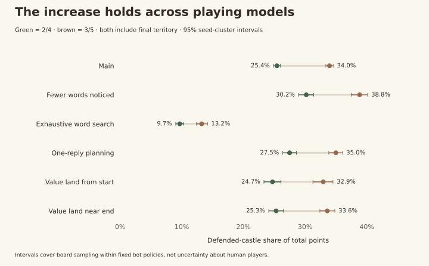

2 / 4
Words and defended castles. No points for ordinary territory.
Expanded English scoring study · 18 October 2026
Side 3, centre 5 raises castle income from 25.4% to 34.0% of the score. Words still lead, but the balance moves noticeably toward holding the board.
The previous controls are reused exactly. Bot simulations, not human playtests. Live scoring is unchanged.
The added version
Words and defended castles. No points for ordinary territory.
The same, plus one final point for every owned tile.
Only the defence rate changes: side 3, centre 5. The final territory tally stays.
Castles earn income after surviving the opponent’s turn. At the finish they count as one owned tile, just like any other territory. No immediate capture reward or banked-score deductions.
01 / Point distribution
Mean per-game shares of both players’ final points. 512 main games per setup. Rounded values may sum to 100.1%.
| Main comparison | Words | Castles | Final land |
|---|---|---|---|
| 2/4 · no final territory | 69.9% | 30.1% | 0.0% |
| 2/4 + final territory | 58.9% | 25.4% | 15.6% |
| 3/5 + final territory | 52.1% | 34.0% | 14.0% |
The castle-share increase is 8.5 percentage points before rounding, with paired 95% interval 8.2–8.9. Average combined castle income rises from 73.8 to 110.8 points. Word points barely change: 166.7 to 165.0.
02 / What changes in play
Side payouts rise 50%; centre payouts rise 25%. Side income grows from 17.3% to 24.6% of total points, centre income from 8.1% to 9.3%.
Enemy-owned castle exchanges rise from 5.7 to 6.3 per game. Successful castle-defence payments rise from 30.9 to 32.8 events.
Mean word length is almost unchanged: 5.06 versus 5.02 letters. Lower word-point share mostly reflects bigger castle payouts, not disappearing word scores.
| Main comparison | 2/4 + land | 3/5 + land |
|---|---|---|
| Castle exchanges per game | 5.7 | 6.3 |
| Castle defence payments per game | 30.9 | 32.8 |
| Word moves capturing a castle | 38.5% | 41.1% |
| Word moves taking enemy land | 55.1% | 53.9% |
| Moves sacrificing word points for position | 22.7% | 25.0% |
| Average word length | 5.06 | 5.02 |
| Halfway leader eventually wins | 70.9% | 74.4% |
| Last-move lead reversal | 9.7% | 5.9% |
| Starting player win share | 52.1% | 53.5% |
Both columns include final territory. Defence events count one castle surviving one opponent action. Spatial sacrifice gives up >=2 available word points for greater land or castle opportunity. Halfway leader uses banked points after 60 letters; final-move reversal uses projected territory and excludes tied pre-move scores.
03 / Does it depend on the player?

One-reply planning gives 51.1% words / 35.0% castles / 13.9% final land, close to the main result. With fewer noticed words, total board-related points slightly outweigh words. Strong word search still makes words dominate because long words leave fewer turns for castle income.
| Castle share | 2/4 + land | 3/5 + land |
|---|---|---|
| Main | 25.4% | 34.0% |
| Fewer words noticed | 30.2% | 38.8% |
| Exhaustive familiar-word search | 9.7% | 13.2% |
| One-reply planning | 27.5% | 35.0% |
| Value land from the start | 24.7% | 32.9% |
| Value land near the end | 25.3% | 33.6% |
| Opponent | 2/4 + land | 3/5 + land |
|---|---|---|
| Word-first | 69.1% | 80.1% |
| Castle-first | 43.4% | 48.0% |
| Score per letter | 65.6% | 67.2% |
Win shares, 128 games per setup and matchup; draws half. Fixed heuristics, not optimal players. Descriptive comparisons.
04 / Recommendation
Castle control becomes more consequential, especially on the sides. The main split—52% words, 34% defended castles, 14% final territory—is a credible balance for your direction. I would stop increasing payouts here until human games show how recoverable a castle lead feels.
Main halfway leaders win 74.4%, up from 70.9%. Last-move reversals fall from 9.7% to 5.9%. That fits a stronger banked-income game, though the reply-planning model does not show the same halfway-lead trend.
Main starter wins are 53.5%, versus 52.1%. The paired uncertainty includes no change. Stronger word search gives the starter 59.4%; one-reply planning 57.8%.
My preference: try 3/5 if you want castles to matter more. Keep 2/4 in the comparison if you prefer more comeback opportunities and a clearer word-point majority. Neither is proven more enjoyable from bot games.
No production rule change, new APK or backend deployment is included in this research.
05 / Inspect the games
Six full replays: the first main-study seed, both starters, all three setups. Gold borders mark castles. The selected path shows the letters used; other tiles show the resulting board.
06 / Evidence and limits
1,504 new games and 37,138 new turns. The 2,880 previous distinct games are reused exactly, with published hashes checked. All 512 new main games were replayed to audit every payout. Twenty complete control games reproduce earlier results; sixteen rule tests pass. No truncated searches or unfinished games.
Same seeds, both starters, dictionary, board, letters and fixed playing policies. Bots adjust their castle valuations to 3/5, so this includes changed decisions. Main play samples twelve familiar words; the report also tests fewer words, exhaustive familiar search, one-reply planning and two land-valuation schedules.
Intervals resample paired board seeds 2,000 times. They describe sampling under these policies, not human enjoyment. No multiple-testing correction. Resignation, draws and phone interaction are outside this simulation.
4,512 logged executions include 128 repeated controls excluded from the distinct total. No player data. No new ongoing cost. Report logic and charts checked; physical-phone rendering unavailable.